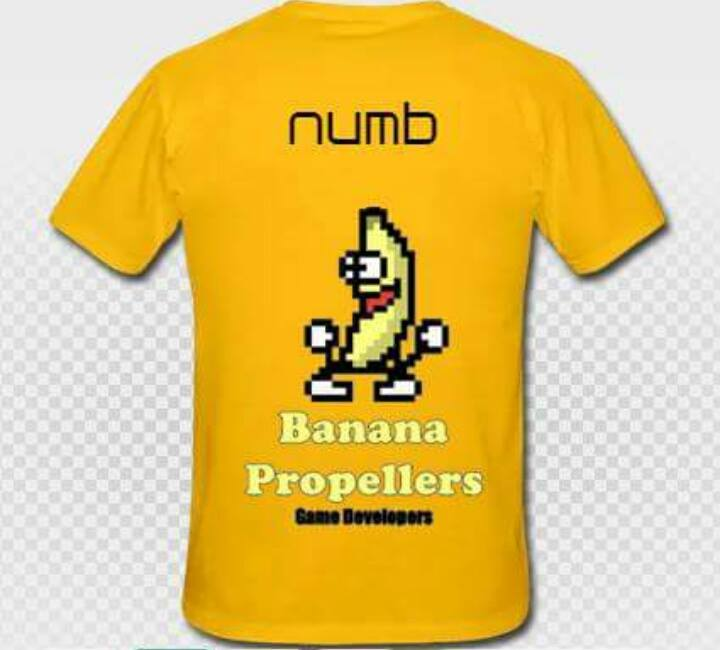
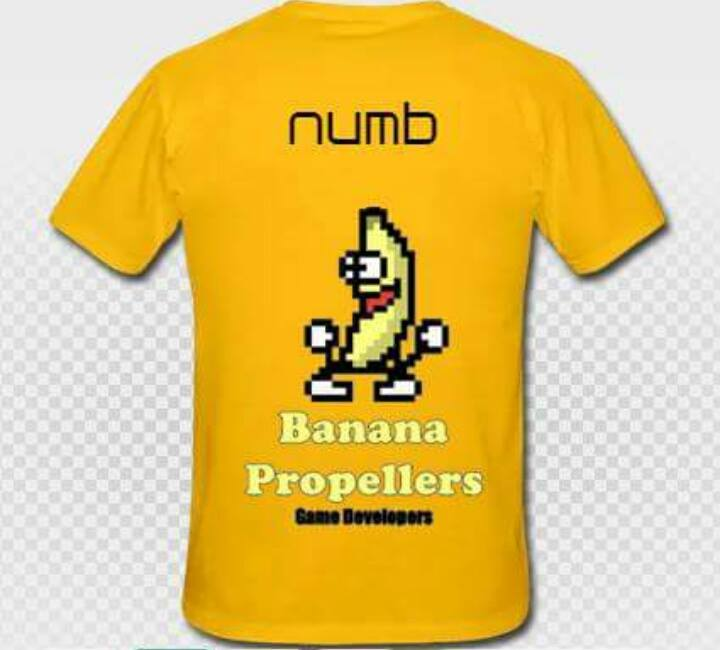

Vous aimez notre jeu a la qualite sans egale?
Vous avez de l'argent en trop et vous voulez nous soutenir dans notre train de vie d'empereurs ?
Mais si. On sait que vous le voulez. Dans notre grande generosite, nous mettons a votre disposition des t-shirts a l'effigie de notre studio de developpement. Et oui. Vous ne revez pas ! Vous aussi pourrez maintenant avoir l'air ridicules en toutes circonstances. Personnalisez votre t-shirt en y mettant votre propre pseudo pour avoir encore plus de SWAG. Vous pouvez meme avoir votre pseudo en BRAILLE sur l'une des manches ! Instaurez votre domination avec leur couleur jaune qui aura le double avantage de detourner l'attention des nombreuses imperfections qui parcourent votre visage ET de bruler la retine de votre entourage. Regardez moi ca, ils sont purement sublimes.
 
